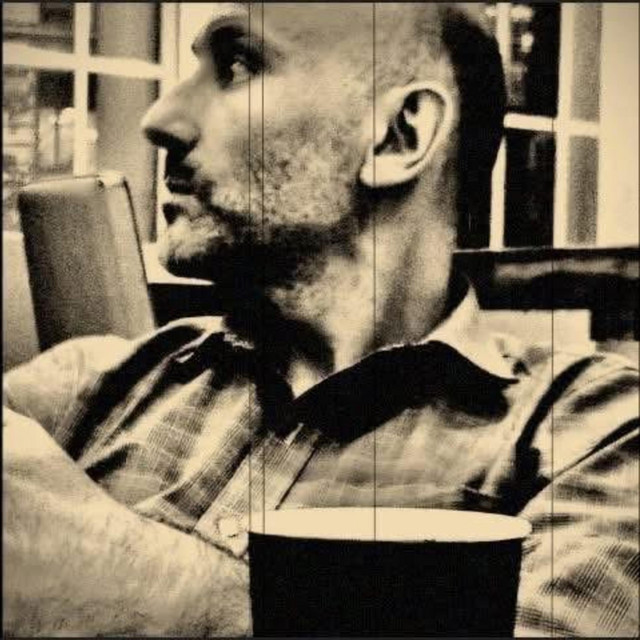

Σημείο Μηδέν
Album · 26 songs · 1 hr 23 min · Released September 20, 2026
Tracklist
Tap a track to play a preview right here, via Spotify’s own player.
- 13:27
- 22:56
- 33:11
- 43:01
- 52:41
- 63:16
- 72:49
- 82:46
- 92:55
- 103:23
- 114:13
- 123:46
- 133:36
- 144:01
- 153:28
- 162:37
- 172:57
- 183:41
- 192:59
- 203:05
- 213:03
- 223:15
- 233:00
- 243:21
- 252:41
- 262:50
Listen on Spotify →
Follow on Spotify · Ioannis Alexander Konstas
℗ & © 2026 6722978 Records DK
← Back to Discography